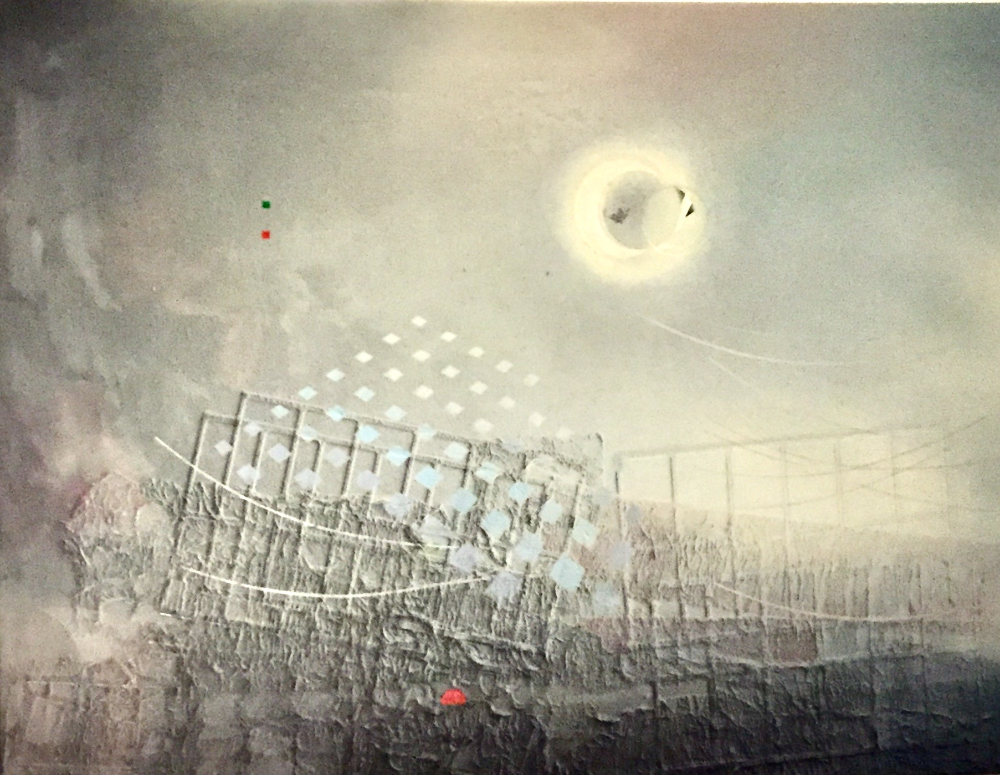
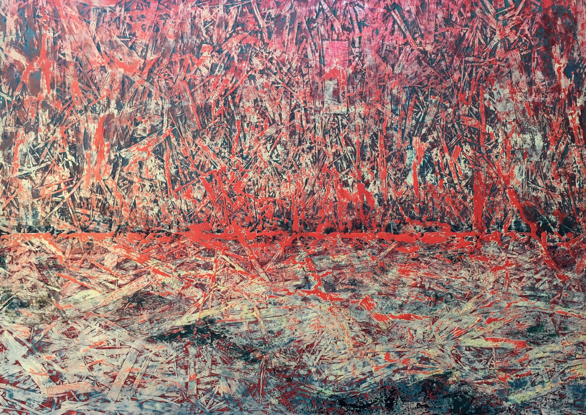
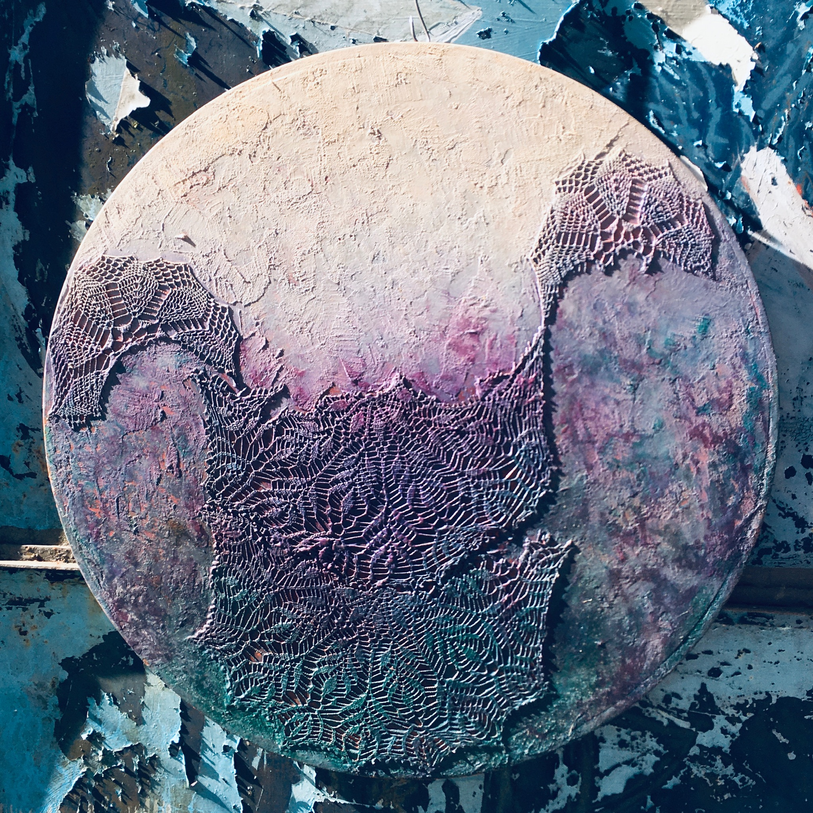

01Prima composizione spaziale
Griglie sospese e luce diffusa.
Entra nello spazio ↗Cinque mondi da attraversare e un nuovo viaggio di opere una dentro l'altra, immaginati a partire dai colori, dalle forme e dalla materia delle opere di Gigi Montico.
Un viaggio a matriosca: dal quadro allo spazio, da un altro quadro a una scultura, fino alla materia che si separa e si ricompone.
Inizia il viaggio →
01Griglie sospese e luce diffusa.
Entra nello spazio ↗ 02
02Una successione di quinte e aperture.
Entra nello spazio ↗
03Un paesaggio di segni e frammenti.
Entra nello spazio ↗ 04
04Strutture, tracce e superfici industriali.
Entra nello spazio ↗
05Cerchi, passaggi e superfici sospese.
Entra nello spazio ↗